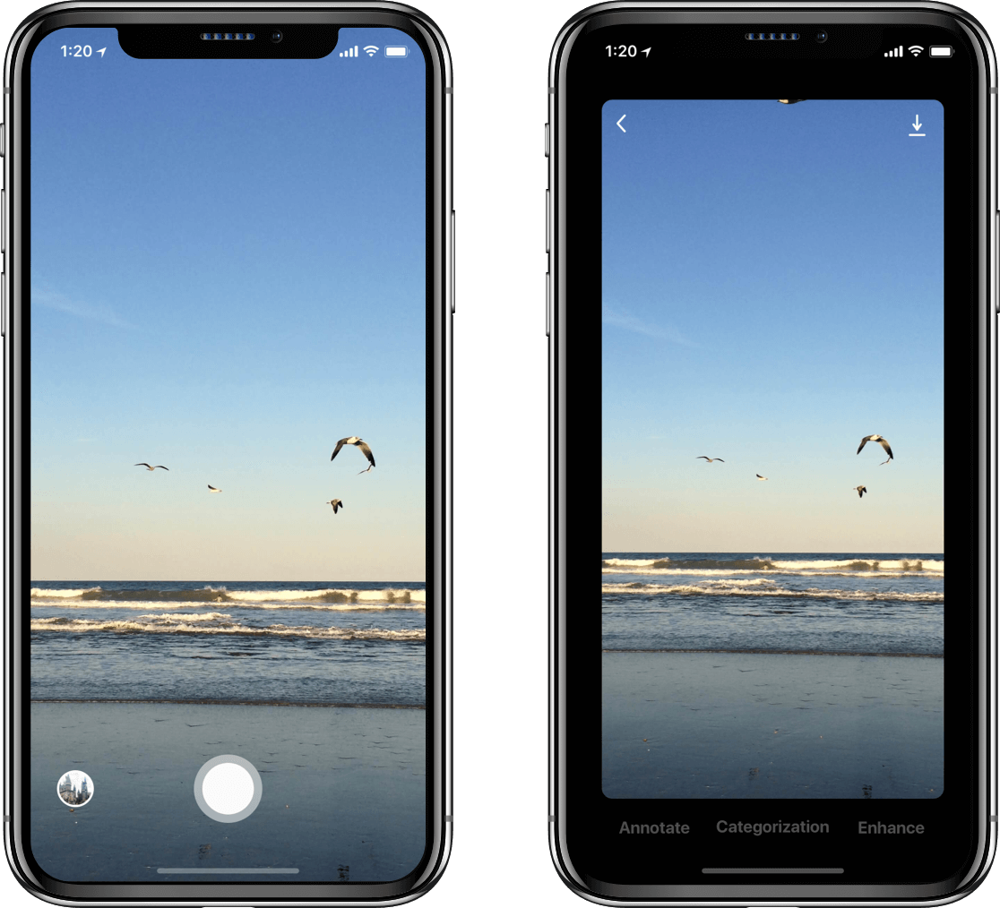
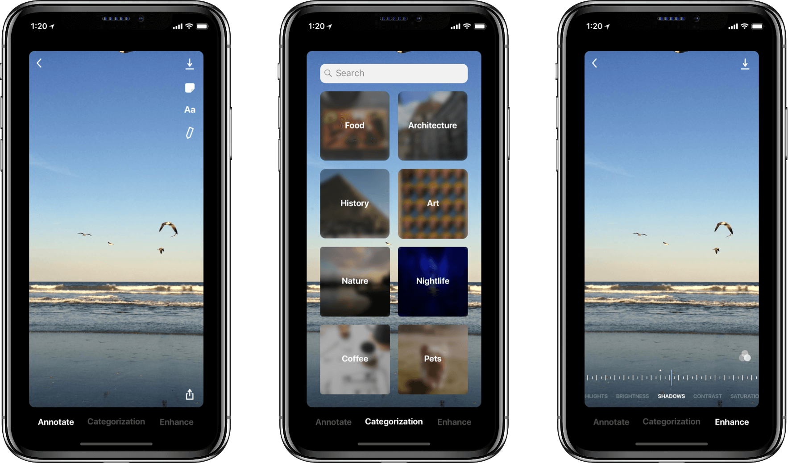
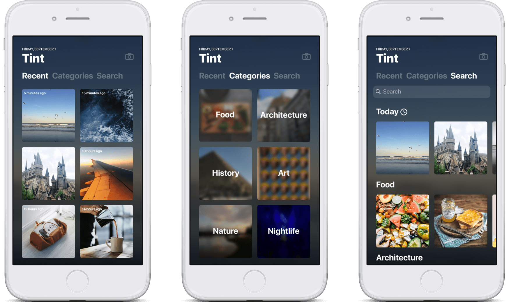
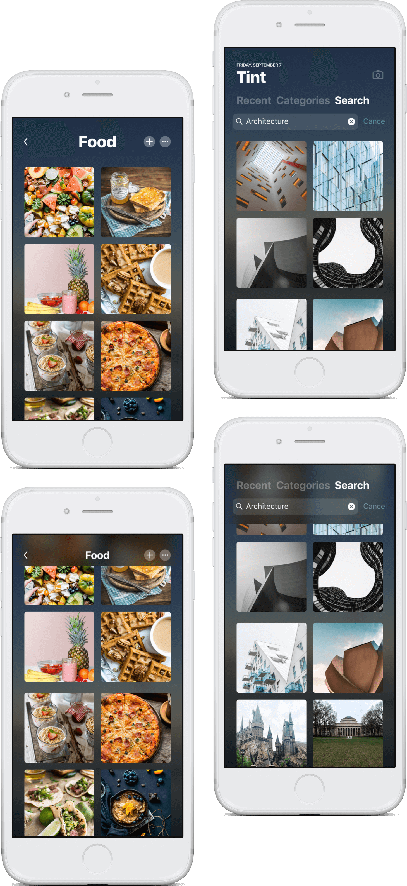

Overview
An application that automatically detects and classifies images on the go.
Roles
User Interface Designer
User Experience Designer
Timeline
September 2018
We see a lot of cool things everyday, but we don’t have the time to make a note of all the objects that pique our curiosity. What if an application could automatically organize and compile knowledge about these objects while we’re out and remind us when we get home?
People want to look up things that are interesting to them, but can’t because it’s time prohibitive. Playing around with the concept of a general camera app, I recognized the strong familiarity that users had with current applications. In order to retain user behaviors, I created a simple camera view. When you’re on the go, you just want to take the picture and move on with your day. The view simply contains a single button for taking pictures and accessing a library of previously taken photos. 
The ability to modify images in this application is a mode of entertainment. As apps like Snapchat and the "Story" concept grow, it’s important to recognize the intended audience of a younger user base. Users expect to be able to play with photos, so this aspect is vital for familiarity. 
The idea is for a user to be able to "catch up" on their day, so the photo library is focused on memory and reflects on the last photo taken by the user. Users can look at their photos chronologically by default, by category (which is suggestable in the 'Edit' screen above or done automatically by machine learning APIs), and by keyword.  The background of the application will always be a blurred, tinted version of the last photo taken, providing the subtle "reflection" aspect mentioned earlier.
This project was originally an intended design for the Y-Combinator Startup School project 'Clip'. During the project, I produced a handful of more high-fidelity mockups to show scrolling and search results.
